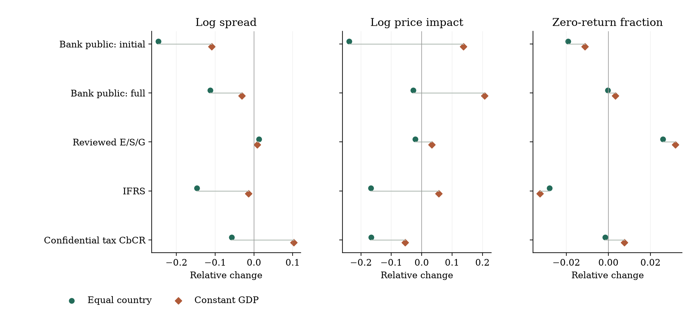
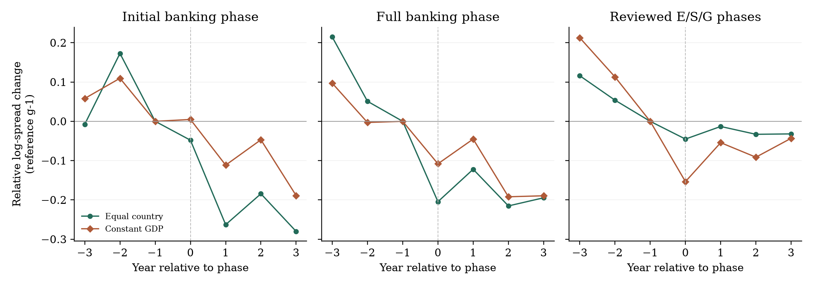

Initial banking-phase spreads
Equal-country / constant-GDP comparison. A descriptive association, with magnitudes sensitive to weighting.
GLOBAL DISCLOSURE / CAPITAL MARKETS
The strongest descriptive spread pattern surrounds Europe’s initial banking transparency phase. Legal scope and information timing determine how far that finding can travel.
Around the initial 2014 EU banking disclosure phase, country-market spreads are lower relative to non-EU comparison markets.
The comparison is −21.9% under equal-country weighting and −10.3% under predetermined GDP weights. Both use 15 treated markets. It measures whole equity-market environments, rather than a verified sample of legally eligible banks.
One coordinated EU wave, overlapping reforms and contrary price-impact evidence prevent a causal bank-issuer claim. The reviewed ESG phases do not show a consistent liquidity gain, and the independent diffusion models do not establish a mechanism.
Equal-country / constant-GDP comparison. A descriptive association, with magnitudes sensitive to weighting.
Initial activity, turnover and employees; fuller profit, tax and subsidy reporting follows. Confidential tax CbCR stays separate.
No stable focal coefficient passes the full-family Holm correction. Collective EU implementation is not 28 independent choices.
Full E/S/G requires all three topics for the relevant issuer population. Comply-or-explain is a required response; voluntary adoption of a practice is a different question. Climate governance does not establish a broad G mandate, and CSR spending does not establish full ESG reporting.
France’s remuneration and mandates start in FY2001; its NRE environmental/social paragraph applies from FY2002. The joint reviewed date is 2002.
Hong Kong general E/S disclosures: FY starts 2016. Singapore: FY ends from 31 December 2017. Ireland: FY starts from 1 August 2017. Fiscal boundaries are not observed public filing dates.
India’s initial top 100 differs from a later top 500 expansion. Argentina’s cited law is subnational. Canada, Pakistan and China are withheld from the full-topic class under the stated evidence definition.
| Regime | Information and audience | Covered population / timing |
|---|---|---|
| Reviewed mandatory E/S/G | Public topic-specific responses; comply-or-explain counts as required reporting. | 37 reviewed country phases. Listing, size, sector and materiality rules apply. These are not certified first-ever national ESG dates. |
| Bank public CbCR: initial | Names, activities, locations, turnover and employees. | Article 89 regulated institutions; public by July 2014. The 28 EU home-jurisdiction entries are one collective wave. |
| Bank public CbCR: full | Adds pretax profit, tax and public subsidies. | Annual full reporting from 2015; fiscal periods and national filer rules differ. Same collective wave; no EUR 750m threshold. |
| Confidential tax CbCR | Multinational tax information to tax administrations. | BEPS Action 13 thresholds, parent/surrogate/local filing roles. Not public banking CbCR. |
| Financial reporting (IFRS) | Public financial statements under applicable standards. | Listed/consolidated and national population rules; transitional phases differ. |
Dates identify the reviewed reporting phase and population, not an unverified global first-topic census. General multinational public tax reporting, extractive payments and climate-only rules remain separate classes in the companion register. No future schedule is included. All 18 class counts and country rows are online; 444 country-class phase entries through 2025 include coordinated bank home-geography entries, not 444 independent adoptions.
37 qualifying reviewed phases and four withheld assignments. These are reviewed regimes, not a complete census of the earliest national E, S and G duties. Some national original clauses remain unarchived; evidence grades are explicit.
41 country reviews
| Country / JSON | Reviewed phase | Boundary and basis | Covered population | Evidence and sources |
|---|---|---|---|---|
| Argentina · ARG | Withheld Author workbook: 2008 | Year precision · subnational law not national treatment | CABAlegal-domiciledbusinesses principallyoperatinginthecityfor>=1year; mandatoryBRSAonlywith>300workers AND revenueabove medium-enterprise thresholds; voluntaryforothers. | national primary or official implementation source excluded subnational scope argentina caba law ↗ |
| Australia · AUS | 2014 Author workbook: 2003 | 2014-07-01 · first full fiscal period start | ASX-listed entities subject to Listing Rule4.10.3 and third-edition governance recommendations; recommendation7.4 requires material economic/environmental/social risk exposure and management disclosure or an explanation. Materiality and listing exceptions apply. | national primary or official implementation source qualifying reviewed reporting phase asx 2014 transition ↗ asx es risks ↗ legacy asx code ↗ |
| Austria · AUT | 2017 Author workbook: 2016 | 2017-01-01 · first covered fiscal period start | NaDiVeG, UGB243b/267a; large public-interest companies/groups with >500 employees; size tests and consolidated subsidiary exemption. | national primary or official implementation source qualifying reviewed reporting phase nfrd aut law ↗ nfrd original ↗ nfrd gri country mapping ↗ |
| Belgium · BEL | 2017 Author workbook: 2009 | 2017-01-01 · first covered fiscal period start | Law3September2017; public-interest entities with >500 average employees and at least one financial-size test, including qualifying consolidated parents. | official summary or country mapping national clause not fully archived qualifying reviewed reporting phase nfrd bel law ↗ nfrd original ↗ nfrd gri country mapping ↗ |
| Bulgaria · BGR | 2017 Author workbook: 2016 | 2017-01-01 · first covered fiscal period start | Large public-interest entities with >500 employees; parent groups subject to consolidated statement, subsidiaries can use qualifying parent reporting. | official summary or country mapping national clause not fully archived qualifying reviewed reporting phase nfrd bgr law ↗ nfrd original ↗ nfrd gri country mapping ↗ |
| Canada · CAN | Withheld Author workbook: 2004 | 2004-03-30 · conditional financial disclosure not comprehensive ESG mandate | AIFfilersunderNI51-102; nonventure/reporting-issuerexemptions, materiality andfundamentalpolicyconditions matter. Environmentalfinancialeffects, employees andconditionalS/Epolicyinformation are not a universalrequirementtoreportorexplainallESGpolicies. | national primary or official implementation source excluded conditional financial disclosure canada aif 2004 ↗ canada aif effective ↗ |
| Chile · CHL | 2015 Author workbook: 2015 | 2015-12-31 · annual reference date | All Chilean openstockcorporations (sociedadesanonimasabiertas) underNCG385; mandatory questionnaire about adopted governance/CSR/sustainabledevelopment practices,referencing31December anddue31Marchnextyear; practiceadoptionitselfnotcompulsory. | national primary or official implementation source qualifying reviewed reporting phase chile 2015 385 ↗ chile 2015 launch ↗ |
| China · CHN | Withheld Author workbook: 2008 | Year precision · scoped CSR and internal control history | SSECorporateGovernanceSectorconstituents,overseaslistedforeign-shareissuersandfinancialcompaniesmustsubmitCSR/internal-controlreportswithFY2008annualreports; otherissuersencouraged. | national primary or official implementation source excluded full topic template not verified china 2008 scope ↗ china 2008 requirement ↗ |
| Cyprus · CYP | 2017 Author workbook: 2016 | 2017-01-01 · first covered fiscal period start | Large public-interest entities with >500 average employees; qualifying parent consolidated reporting and subsidiary exemption. | national primary or official implementation source qualifying reviewed reporting phase nfrd cyp law ↗ nfrd original ↗ nfrd gri country mapping ↗ |
| Denmark · DNK | 2016 Author workbook: 2016 | 2016-01-01 · first covered fiscal period start | Reporting classD entities with >=500employees fromFY2016; large classC and smaller classD enter the expanded four-topic requirements fromFY2018. PriorCSR2009/human-rights and climate2013 duties remain distinct. | national primary or official implementation source qualifying reviewed reporting phase denmark 2015 law ↗ nfrd gri country mapping ↗ |
| Egypt · EGY | 2022 Author workbook: not in workbook | Year precision · first covered financial year end year | AllEGX-listedcompaniesforESGunderResolution108/2021; NBFIswithissuedcapitalornetequity>=EGP100munder107/2021. AdditionalTCFDfor>=EGP500m;phase-inquarterlyprogressfrom1January2022. | national primary or official implementation source qualifying reviewed reporting phase egypt 2021 resolution scope ↗ |
| Estonia · EST | 2017 Author workbook: 2016 | 2017-01-01 · first covered fiscal period start | Public-interest entities (listed companies, credit institutions, insurers) with >500 employees; country-specific Accounting Act scope. | official summary or country mapping national clause not fully archived qualifying reviewed reporting phase nfrd est law ↗ nfrd original ↗ nfrd gri country mapping ↗ |
| Finland · FIN | 2017 Author workbook: 2016 | 2017-12-31 · first covered fiscal year end | Large public-interest reporting entities with >500 average employees; group non-financial statement can cover qualifying subsidiaries. | national primary or official implementation source qualifying reviewed reporting phase nfrd fin law ↗ nfrd original ↗ nfrd gri country mapping ↗ |
| France · FRA | 2002 Author workbook: 2001 | 2002-01-01 · first covered fiscal period start | French companies whose securities are admitted to a regulated market for environmental/social paragraph; director remuneration and mandates under the first three paragraphs apply fromFY2001. | national primary or official implementation source qualifying reviewed reporting phase france nre decree ↗ |
| Germany · DEU | 2017 Author workbook: 2016 | 2017-01-01 · first covered fiscal period start | Large capital-market-oriented companies with >500 average employees; separate rules include credit institutions and insurers, with group/parent exemptions. | national primary or official implementation source qualifying reviewed reporting phase nfrd deu scope ↗ nfrd original ↗ nfrd gri country mapping ↗ |
| Greece · GRC | 2016 Author workbook: 2006 | 2016-07-07 · first covered fiscal year end national early implementation | Large public-interest entities with >500 employees under Law4403/2016; earlier environmental/employee KPI duties under3487/2006 are a distinct, narrower history. | national primary or official implementation source qualifying reviewed reporting phase nfrd grc law ↗ nfrd original ↗ nfrd gri country mapping ↗ |
| Hong Kong · HKG | 2016 Author workbook: 2015 | 2016-01-01 · first covered fiscal period start | Main Board and GEM listed issuers within the HKEX ESG reporting rules; annual E/S general disclosures on comply-or-explain; separate Corporate Governance Code. Environmental KPIs become comply-or-explain forFYstarts1January2017. | national primary or official implementation source qualifying reviewed reporting phase hkex esg 2016 ↗ hkex 2019 review ↗ |
| Hungary · HUN | 2017 Author workbook: 2016 | 2017-01-01 · first covered fiscal period start | Public-interest entities with >500 employees and turnover>HUF12billion or assets>HUF6billion; consolidated parent scope and qualifying exemptions. | official summary or country mapping national clause not fully archived qualifying reviewed reporting phase nfrd hun law ↗ nfrd original ↗ nfrd gri country mapping ↗ |
| India · IND | 2012 Author workbook: 2015 | 2012-12-31 · first covered fiscal year end | Top100 listed companies by BSE/NSE market capitalization as at31March2012; other companies initially voluntary. Subsequent LODR34(2)(f) expands top 500; top 1000 and BRSR phases remain distinct. | national primary or official implementation source qualifying reviewed reporting phase india brr 2012 scope ↗ india brr 2015 ↗ |
| Indonesia · IDN | 2012 Author workbook: 2012 | 2012-12-31 · first covered fiscal year end | Issuers and public companies governed by Bapepam-LKX.K.6; annual report includes corporate governance and CSR covering environment, labour/health/safety, community and product responsibility. Natural-resource CSR spending law is separate. | national primary or official implementation source qualifying reviewed reporting phase indonesia 2012 law ↗ |
| Ireland · IRL | 2017 Author workbook: 2016 | 2017-08-01 · first covered fiscal period start | Large ineligible/public-interest entities with >500 employees, and qualifying holding-company groups; apply original2017scope and separately recorded2018amendment. | national primary or official implementation source qualifying reviewed reporting phase nfrd irl law ↗ nfrd original ↗ nfrd gri country mapping ↗ |
| Italy · ITA | 2017 Author workbook: 2016 | 2017-01-01 · first covered fiscal period start | Public-interest entities with >500 employees and assets>EUR20m or revenue>EUR40m; corresponding consolidated groups; qualifying subsidiary exemption. | national primary or official implementation source qualifying reviewed reporting phase nfrd ita law ↗ nfrd original ↗ nfrd gri country mapping ↗ |
| Malaysia · MYS | 2016 Author workbook: 2007 | 2016-12-31 · first covered fiscal year end | Main Market issuers with marketcap>=RM2bn at31December2015 (or relevant2016listing date), followed by other Main Market issuers forFYE>=31December2017; ACEphaseFYE>=31December2018. Listed REITmanagement-company rules also apply. | national primary or official implementation source qualifying reviewed reporting phase malaysia sustainability 2015 ↗ |
| Malta · MLT | 2017 Author workbook: 2016 | 2017-01-01 · first covered fiscal period start | Large listed/public-interest entities, >500employees and assets>EUR20m or turnover>EUR40m; group/parent exemptions and listing rules. | official summary or country mapping national clause not fully archived qualifying reviewed reporting phase nfrd mlt notice ↗ nfrd original ↗ nfrd gri country mapping ↗ |
| Netherlands · NLD | 2017 Author workbook: 2016 | 2017-01-01 · first covered fiscal period start | Large public-interest legal entities with >500employees, including qualifying consolidated parent groups; subsidiary exemption. | national primary or official implementation source qualifying reviewed reporting phase nfrd nld law ↗ nfrd original ↗ nfrd gri country mapping ↗ |
| Norway · NOR | 2013 Author workbook: 2013 | Year precision · first covered financial year | Large enterprises under the Norwegian Accounting Act, including public limited companies and listed accounting entities and designatedlarge entities; policy, action, results or no-policy disclosure on human rights, labour/social, environment and anti-corruption. | national primary or official implementation source qualifying reviewed reporting phase norway csr 2013 ↗ norway 2013 scope ↗ |
| Pakistan · PAK | Withheld Author workbook: 2009 | 2009-07-01 · CSR activity reporting fiscal period start | Allpubliccompanies underCSRGeneralOrder2009; descriptiveandmonetarydisclosureofCSRactivitiesundertaken. CSRvoluntaryguidelinesandcorporategovernanceareseparate. | national primary or official implementation source excluded CSR activity only pakistan csr order ↗ |
| Peru · PER | 2016 Author workbook: 2015 | Year precision · first covered annual report year | Issuers with securities in the publicsecuritiesmarketregister subject toannualreport requirements; issuers withonlyMAVsecurities exempt. Sustainabilityresponse supplements existing corporate-governance report. | national primary or official implementation source qualifying reviewed reporting phase peru sustainability 2016 ↗ peru official issuer2016 ↗ peru official annual2016 ↗ |
| Philippines · PHL | 2019 Author workbook: 2011 | Year precision · first covered annual report year | Philippine publicly-listed companies; sustainability template attached toSECForm17-A, or qualifying existing report/link; firstthreeimplementationyearscomply-or-explain. The referenced2011CSRAct is a bill, not this reporting mandate. | national primary or official implementation source qualifying reviewed reporting phase philippines 2019 mc4 ↗ philippines 2011 bill ↗ |
| Poland · POL | 2017 Author workbook: 2016 | 2017-01-01 · first covered fiscal period start | Specified public-interest entities with >500FTE and assets>PLN85m or net revenue>PLN170m in current and preceding year; consolidated parent thresholds and exemptions. | national primary or official implementation source qualifying reviewed reporting phase nfrd pol law ↗ nfrd original ↗ nfrd gri country mapping ↗ |
| Portugal · PRT | 2017 Author workbook: 2010 | 2017-01-01 · first covered fiscal period start | Large public-interest companies/groups with >500employees; statutory financial-size tests and consolidated subsidiary exemption. | official summary or country mapping national clause not fully archived qualifying reviewed reporting phase nfrd prt law ↗ nfrd original ↗ nfrd gri country mapping ↗ |
| Romania · ROU | 2017 Author workbook: 2016 | 2017-01-01 · first covered fiscal period start | Public-interest entities with >500employees under Ministry of Public Finance Order1938/2016; bank/insurance implementing instruments are separate scope records. | official summary or country mapping national clause not fully archived qualifying reviewed reporting phase nfrd gri country mapping ↗ nfrd original ↗ nfrd gri country mapping ↗ |
| Singapore · SGP | 2017 Author workbook: 2016 | 2017-12-31 · first covered fiscal year end | SGX-listed issuers subject to711A/711B: materialE/S/G factors, policies/practices/performance, targets, framework and boardstatement; first report has up to12months afterFYend. Mainboard/Catalisthistoricalrules. | national primary or official implementation source qualifying reviewed reporting phase sgx 2016 launch ↗ sgx historical guide ↗ |
| Slovenia · SVN | 2017 Author workbook: 2017 | 2017-01-01 · first covered fiscal period start | Public-interest entities with >500employees and qualifying parent groups; statement and group exemption under ZGD-1J. | official summary or country mapping national clause not fully archived qualifying reviewed reporting phase nfrd svn law ↗ nfrd original ↗ nfrd gri country mapping ↗ |
| South Africa · ZAF | 2010 Author workbook: 2010 | 2010-03-01 · first covered fiscal period start | JSE-listed issuers subject to amended listingrequirements: applyKingIII or explain; integrated financial/sustainabilityreporting and boardresponsibilities. EarlierKingII/otherdisclosures remain distinct. | national primary or official implementation source qualifying reviewed reporting phase jse 2010 rules ↗ |
| Spain · ESP | 2017 Author workbook: 2012 | 2017-01-01 · first covered fiscal period start | Public-interest companies/groups with >500employees and large-size conditions under RDL18/2017; later Law11/2018 expansion is separate. | national primary or official implementation source qualifying reviewed reporting phase nfrd esp law ↗ nfrd original ↗ nfrd gri country mapping ↗ |
| Sweden · SWE | 2017 Author workbook: 2016 | 2017-01-01 · first covered fiscal period start | All company types satisfying at least two of >250employees, assets>SEK175m, turnover>SEK350m in each of two preceding years; not limited to listed PIEs; qualifying group exemption. | official summary or country mapping national clause not fully archived qualifying reviewed reporting phase nfrd swe original ↗ nfrd original ↗ nfrd gri country mapping ↗ |
| Taiwan (China) · TWN | 2014 Author workbook: 2019 | Year precision · reviewed rule adoption year first reports for preceding year | TWSElisted food/chemical/financial-insurance companies, companies with food-and-beverage revenue>=50%, or commonstockcapital>=NTD10bn based onlatestfinancialreport. Latercapitalbands andTPExrules areseparate. GRIcoreprofile and materialE/S disclosures, with sectordetails/assurance. | national primary or official implementation source qualifying reviewed reporting phase twse 2014 rules ↗ |
| Thailand · THA | 2021 Author workbook: not in workbook | 2021-12-31 · first covered fiscal period end | Listedissuers required tofileForm56-1OneReport; annualregistration/reportformsconsolidated,withESGpolicies/goals/performance,GHGandhumanrights. Filingwithin3months;offeringstatementsfrom1January2022areseparate. | national primary or official implementation source qualifying reviewed reporting phase thailand 2021 one report ↗ |
| Turkey · TUR | 2020 Author workbook: 2014 | Year precision · first covered data year reported 2021 | Public companies in CorporateGovernanceCommuniqueII17.1article1(5)scope; relevantlistedmarketexceptionsapply; newIPOs report the followingyear data. ESGpracticesvoluntary but compliance/noncompliance reporting is compulsory. | national primary or official implementation source qualifying reviewed reporting phase turkey esg framework ↗ turkey esg scope ↗ |
| United Kingdom · GBR | 2007 Author workbook: 2013 | 2007-10-01 · first covered fiscal period start | UKquotedcompanies underCompaniesAct2006section417enhancedbusinessreview; materialenvironmental,employee,social/communityinformation or omittedkindstatement; statutorydirector/governancereporting applies. The2013strategic/GHG/genderamendment is separate. | national primary or official implementation source qualifying reviewed reporting phase uk business review 2007 ↗ uk strategic 2013 ↗ uk original 2006 417 ↗ |
By 1 July 2014: names, activities, locations, turnover and FTE employees. The G-SII profit/tax submission in 2014 was confidential.
Article 89 ↗From 2015: annual country profits, taxes and subsidies join the initial fields. UK full disclosure was due by 31 December 2015, for the immediately preceding accounting period.
UK statutory instrument ↗The original CRR institution definition and national entity rules determine scope. UK holding companies are not themselves institutions; French law explicitly covers certain financial holding entities.
UK scope guidance ↗A listed parent, a regulated subsidiary and a branch are distinct roles. Group publication can satisfy some subsidiary obligations. Non-EU parents may be exposed through EU subsidiaries, so a country’s geography is not issuer eligibility.
The historical EBA lists contain 123 groups in 2014 and 105 in 2015:228 roster entries,143 distinct LEIs. They include listed parent groups and unlisted institutions. Norway is retained in the roster but is not automatically assigned the EU 2014/2015 dates. These lists are not a complete Article 89 filer census.
Loading historical groups…
| Year | Home country | Historical group | LEI | Coverage status |
|---|
HSBC’s 2013 report contains turnover/FTEs; its 2014 report adds profit, cash tax and subsidies and is dated 30 June 2015 on HSBC’s historical reporting index. Deutsche Bank’s 2014 note 45 and BNP Paribas Fortis’s 2014 annual report corroborate full reporting; Fortis’s half-year 2014 report contains the initial fields. Fortis is not the same equity issuer as its listed French parent.
Five report examples are archived locally. Only the HSBC 2014 publication date is independently observed here. PDF period ends, compilation stamps and file-name dates are not filled in as publication dates. A Deutsche Bank report corroborates an issuer ISIN, but historical vendor identifiers and a complete bank comparison panel remain unverified.
Report-specific evidence JSON ↗The initial bank-phase spread comparison is negative under all six weights and several timing and sample diagnostics. GDP-weighted price impact rises around both banking phases. Full-phase spread comparisons reverse sign under a pretrend adjustment. Both facts qualify the spread finding.
| Regime | Outcome | Equal country [N] | Constant GDP [N] |
|---|---|---|---|
| Bank public: initial | Log spread | -0.247 [15] | -0.109 [15] |
| Bank public: initial | Log impact | -0.239 [14] | 0.137 [14] |
| Bank public: initial | Zero-return fraction | -0.019 [15] | -0.011 [15] |
| Bank public: full | Log spread | -0.113 [15] | -0.032 [15] |
| Bank public: full | Log impact | -0.028 [14] | 0.207 [14] |
| Bank public: full | Zero-return fraction | -0.000 [15] | 0.003 [15] |
| Reviewed E/S/G | Log spread | 0.013 [23] | 0.008 [22] |
| Reviewed E/S/G | Log impact | -0.021 [23] | 0.033 [22] |
| Reviewed E/S/G | Zero-return fraction | 0.026 [23] | 0.032 [22] |
| IFRS | Log spread | -0.147 [20] | -0.014 [20] |
| IFRS | Log impact | -0.167 [21] | 0.056 [21] |
| IFRS | Zero-return fraction | -0.028 [22] | -0.033 [22] |
| Confidential tax CbCR | Log spread | -0.057 [42] | 0.103 [42] |
| Confidential tax CbCR | Log impact | -0.166 [42] | -0.054 [42] |
| Confidential tax CbCR | Zero-return fraction | -0.002 [43] | 0.008 [43] |
Changes from g-1 to g+1 use the same securities within country, at least 30 balanced quotes and at least 3 comparison countries. Brackets give treated-market counts. Negative values indicate lower spreads, impact or zero-return fractions. Bank rows compare EU versus non-EU home-geography market environments, not eligible bank issuers. GDP weights are measured in g-1; samples can differ with macro coverage. Both bank phases are one collective assignment and overlapping windows. These are descriptive contrasts; no causal p-values are reported.
Points are descriptive g+1 versus g-1 contrasts; connecting lines indicate different economic weights, not confidence intervals. Bank rows measure whole-market home-regime geography. Higher GDP-weighted price impact qualifies the negative bank spread comparisons.

Securities, countries and cohorts are held fixed from g-3 through g+3 within each panel/weight. The g-1 reference is zero by construction. Initial/full bank panels each have 13 treated markets; reviewed ESG has 12 equal-weight and 11 GDP-weighted treated markets. Bank windows overlap; earlier relative movements and concurrent reforms preclude a causal interpretation.

No causal liquidity p-values are reported. The banking windows overlap and one collective assignment cannot provide independent national-policy replication. Later reviewed ESG phases are comparison cases, not certified never-treated issuer populations.
All balanced profiles ↗ · Fixed weights, outcomes and diagnostics ↗
Koning et al.’s competition, learning, emulation and coercion logic motivates distinct lagged measures. EU banking phases are excluded as independent focal choices. Missing national histories remain unknown.
| Measure | Controls | Logit coefficient (SE) | Raw p | Broad Holm p | Rows / countries |
|---|---|---|---|---|---|
| Export peers | No | 0.458 (0.264) | 0.0883 | 1.000 | 233/58 |
| Export peers | Yes | -0.055 (0.320) | 0.8654 | 1.000 | 218/55 |
| Relative GDP-growth learning | No | -0.409 (0.695) | 0.5601 | 1.000 | 74/33 |
| Relative GDP-growth learning | Yes | -0.754 (0.850) | 0.3821 | 1.000 | 69/31 |
| Language peers | No | 0.105 (0.275) | 0.7032 | 1.000 | 411/66 |
| Language peers | Yes | 0.009 (0.281) | 0.9737 | 1.000 | 348/53 |
| Credit + aid / GDP | No | -0.720 (0.186) | 0.0003 | 0.142 | 269/48 |
| Credit + aid / GDP | Yes | -0.798 (0.345) | 0.0257 | 1.000 | 255/45 |
Family-year strata and country-clustered covariance; t reference with countries-1 degrees of freedom. Continuous focal variables are standardised within each model; relative-growth learning is binary. Controls are lagged GDP per capita, growth and trade/GDP. Broad Holm correction covers all 433 stable focal coefficients in the complete matrix, including status/LPM alternatives. No broad-adjustment discovery remains. Common EU banking waves do not enter as independent national events. Sample support and unavailable/unstable fits are retained online.
There are 433 stable focal coefficients across 1,330 attempted designs; none passes the full-family Holm correction. Financial dependence has a negative timing association, opposite to positive coercion, and does not survive the broad adjustment. The bank spread pattern does not establish that countries learn from foreign liquidity benefits.
9 pages · three tables · two figures. The paper follows the investor-information question through reporting scope, liquidity comparisons, identification and independent implementation.
Reporting rules differ in the information they require, the firms they cover and the date on which investors can obtain the report. We examine these distinctions across global disclosure policies using 1,055,142 security-years from 90 markets during 2000-2025. The clearest descriptive pattern is spread compression around the initial public banking country-by-country reporting phase in Europe. Country-market spreads are 21.9% lower relative to the comparison markets with equal-country weights and 10.3% lower with predetermined GDP weights. The pattern does not extend uniformly to price impact or the reviewed mandatory E/S/G phases. Banking disclosure is one coordinated regulatory wave, and the comparisons do not identify effects on eligible bank issuers. International timing models distinguish competition, learning, emulation and financial dependence; no focal coefficient survives correction across 433 stable coefficients. The evidence identifies a specific spread association and shows why scope, information timing and collective implementation must be separated before attributing capital-market benefits or diffusion mechanisms to disclosure mandates.
Disclosure regulation seeks to change the information available to market participants. Whether it lowers trading costs depends on what becomes public, which firms supply the information and when the obligation takes effect. A rule requiring environmental policies, a confidential tax return and a public report of banking activities can therefore have different capital-market consequences even when each is described as a disclosure reform.
We examine two connected questions. First, how does market liquidity change around the implementation of reporting requirements with different information content and audiences? Second, is domestic implementation associated with earlier policies or economic outcomes among foreign peers? The first question concerns the information environment; the second concerns the process through which regulation spreads.
Our strongest market pattern concerns the initial European public banking country-by-country reporting phase in 2014. The equal-country log-spread comparison is -0.247, and the constant-GDP-weighted comparison is -0.109. Both indicate lower spreads. The direction remains negative across the six predetermined weighting schemes, although the magnitude varies substantially. The result concerns the equity markets of EU home jurisdictions; it is not an estimate for a verified sample of legally eligible banks.
This distinction disciplines the interpretation. GDP-weighted price impact rises around the banking phases, the full-reporting spread comparison changes sign after a pretrend adjustment, and reviewed ESG phases do not show a consistent liquidity improvement. We therefore develop a focused account of the observed spread compression rather than infer a general benefit from every disclosure obligation. Koning et al. (2018) motivate our separate tests of diffusion mechanisms; the banking wave itself cannot supply independent national adoption decisions.
Krueger et al. (2023) examine mandatory ESG reporting and its liquidity consequences. We extend the economic comparison across reporting obligations with different content and audiences. Separating comprehensive E/S/G responses, climate-only requirements, confidential tax reporting and public banking disclosures makes the relevant information channel explicit. Our evidence concerns policy environments rather than the eligible-firm effects studied in their design.
Public information can reduce adverse selection when it supplies credible, incremental facts that investors otherwise obtain unevenly. Lower adverse selection predicts narrower spreads and lower price impact. Disclosure that repeats existing information, permits superficial responses or imposes costs without improving information need not generate the same response. We predict stronger direct-information effects when the relevant content is publicly accessible and incremental, while treating the direction of each observed outcome as an empirical question.
Mandatory reporting is different from mandatory conduct. A comply-or-explain rule requires a response even if the firm does not follow a recommended practice. A requirement to describe CSR spending does not by itself establish comprehensive environmental, social and governance reporting. Following Krueger et al., a full E/S/G assignment requires all three topics for the relevant issuer population; the last topic determines the joint date. Their voluntary firm-disclosure proxy is I/B/E/S earnings guidance, not voluntary ESG reporting.
Banking public CbCR has two information phases. Article 89 of Directive 2013/36/EU initially requires public names, activities, locations, turnover and employees by July 2014. From 2015, annual reporting adds pretax profits, taxes and subsidies. The 2014 profit-and-tax submission by globally systemic institutions is confidential and is not the full public phase. Confidential BEPS Action 13 and general multinational public income-tax reporting are separate regimes. The banking rule does not use the general EUR750 million multinational revenue threshold.
Eligibility follows the regulated institution and its consolidation perimeter. UK guidance excludes holding companies as institutions and distinguishes third-country branches from authorised subsidiaries; French law expressly includes certain financial holding entities. A listed parent can publish a group report without itself being the regulated filer. These national differences preclude treating every EU-listed equity as an eligible bank.
International diffusion generates separate predictions. Competition concerns earlier implementation among export competitors. Learning concerns prior favourable outcomes among earlier implementers. Emulation concerns policy choices among institutional peers. Coercion requires external dependence and influence over the particular policy. These are distinct explanations; an association with peer exposure or IMF credit does not by itself identify the underlying mechanism.
The policy register contains 441 event records. The ESG legal review covers 41 countries, including all 39 countries in the author-released ESG workbook. It identifies 37 qualifying comprehensive reporting phases and withholds full-ESG assignments for Argentina, Canada, Pakistan and China under the stated definition. These exclusions reflect subnational scope, conditional financial disclosure, CSR-activity reporting or an incompletely verified full-topic template; they do not establish that those countries have no ESG-related obligations.
Table 1 separates the principal obligations. France explicitly applies the NRE environmental and social paragraph from fiscal years beginning in 2002, while its remuneration and director-mandate provisions start in 2001. Hong Kong requires E/S general disclosures from fiscal years starting in 2016, with environmental KPIs following in 2017. Singapore first covers years ending on or after 31 December 2017. India initially covers the largest 100 listed issuers in 2012; that population differs from the later largest-500 expansion used in the reference paper.
National implementation matters within Europe. Ireland specifies financial years beginning on or after 1 August 2017, Finland refers to years ending on 31 December 2017, and the Greek implementation circular covers years ending on or after 7 July 2016. The reviewed phases are not an exhaustive census of the earliest separate national E, S and G duties. Some national commencement clauses remain supported by official summaries or country mapping rather than a fully archived original. Evidence grades and gaps accompany each assignment.
Historical EBA supervisory rosters identify 123 groups in 2014 and 105 in 2015, with 143 distinct LEIs across the two lists. They are supervisory samples, not a complete Article 89 filer census. Five archived HSBC, Deutsche Bank and BNP Paribas Fortis report examples corroborate partial and full public content. HSBC dates publication of its 2014 CbCR report to 30 June 2015. Other report-period ends and PDF file-name dates are not substituted for observed publication dates. A Deutsche Bank 2014 annual report corroborates the issuer ISIN used in a provisional vendor link; a complete historical bank eligibility panel remains unavailable.
The Datastream panel contains 99,100 quote identifiers across 90 jurisdictions during 2000-2025. Major equities and primary country quotes are screened for duplicate or conflicting daily observations, delisting, stale prices and extreme-return reversals. Annual outcomes include log quoted spread, log Amihud price impact and the zero-return fraction, each with at least 120 valid daily observations. Both logged proxies use within-year 1/99 winsorisation. Secondary outcomes are an illiquidity principal component, trading value relative to market capitalisation and return volatility.
For a phase assigned to calendar year g, we compare the same securities in g-1 and g+1, require at least 30 balanced securities per country, and subtract changes in at least three comparison countries. ESG comparisons use later reviewed phases; an unresolved history is not coded as never treated. Bank comparisons use the EU home-jurisdiction geography against non-EU home jurisdictions, excluding non-EU EEA countries. Outside the EU does not imply absence of other reporting or exposure through European subsidiaries.
Country weights are equal, lagged constant-dollar GDP, current-dollar GDP, purchasing-power GDP, sampled market capitalisation or balanced quote counts. GDP-matched equal-weight cells separate weighting from data availability. Prespecified diagnostics vary public-availability timing, pretrend extrapolation, post-period averaging, quote weighting, common-outcome samples, trading-day support, size screens, winsorisation, independent-case support and concurrent policies. All cells, including failures and contrary estimates, are retained. A one-year availability lag is an assumption, not an observed filing calendar.
These contrasts measure market environments. Historical global issuer financials, fiscal years and quote-to-filer group links do not support a verified eligible-issuer treatment panel. The two banking phases overlap with each other and with European banking reforms. They are one collective assignment; country clustering cannot create independent policy variation. We therefore report descriptive magnitudes without causal liquidity p-values.
The diffusion panel uses documented independent country-class-years. First-recorded-phase timing models end at the focal phase; status models examine recorded implementation. Common EU waves are excluded as focal independent choices, including both banking phases. Missing histories remain unknown, and documented scope or enforcement changes censor affected status observations.
Following Koning et al. (2018), competition uses lagged implementation among five export-pattern peers; learning uses prior relative GDP growth or liquidity among geographic neighbours; emulation uses language, legal-origin or IGO peers; external dependence uses IMF credit including SDR allocations and net aid relative to GDP. Signals precede the focal year. Models include family-year strata, country-clustered covariance and, in controlled designs, lagged GDP per capita, growth and trade/GDP. We retain the complete fixed matrix of logit and linear-probability specifications, support failures and diagnostics. Holm correction covers every stable focal coefficient rather than a selected favourable subset.
Table 2 reports the core comparisons. Around the 2014 initial banking phase, log spreads fall by 0.247 with equal-country weights and 0.109 with constant-GDP weights, equivalent to 21.9% and 10.3% relative spread differences. Fifteen treated markets support these cells. The GDP-weighted comparison has an effective treated-country count of 7.3, with Germany accounting for 22.1% of treated weight. The six weighting schemes preserve the negative sign but imply relative differences from about 1.0% to 44.6%; weighting materially changes the economic summary.
The 2015 full banking phase also has negative baseline log-spread comparisons: -0.113 under equal weights and -0.032 under GDP weights. These are overlapping calendar-window contrasts, not two independent policy experiments or an estimate of the incremental effect of publishing tax information. Figure 1 places the bank phases beside reviewed ESG, IFRS and confidential tax reporting using the same outcome definitions.
The evidence does not support an unrestricted liquidity claim. Initial-bank log price impact is -0.239 with equal-country weights but 0.137 with GDP weights. The corresponding full-phase values are -0.028 and 0.207. Reviewed ESG log-spread comparisons are 0.013 and 0.008, while zero-return fractions increase. Thus the strongest finding is a bank-phase spread association, not uniform improvement across liquidity proxies or reporting regimes.
Figure 2 fixes the securities, countries and cohorts from g-3 through g+3. Initial-bank spread comparisons remain below their g-1 reference after the phase, but earlier relative movements and the broader European reform environment prevent a causal attribution. Balanced samples differ from the two-year baseline and are identified separately.
The initial banking spread comparison remains negative with a one-year availability lag, pretrend extrapolation, median quote changes, capitalisation weighting, common-outcome samples and alternative daily-data screens. The full-phase result is less stable: pretrend-adjusted spread comparisons are 0.085 with equal weights and 0.059 with GDP weights, reversing the baseline sign. Removing the collective EU assignment leaves no treated banking wave; concurrent-policy exclusions also remove the required bank comparison support. These diagnostics qualify the banking interpretation rather than establish an isolated effect.
The separate published ESG calendar produces lower spread and price-impact comparisons, but uses a different country sample, dates and covered populations. Replacing that calendar with reviewed legal phases changes more than dates alone. The difference cannot be attributed solely to a particular coding correction, nor can one calendar be chosen because it delivers a preferred sign. Complete benchmark and reviewed results are available together.
Table 3 presents the four focal timing associations. Export-peer exposure has an uncontrolled logit coefficient of 0.458 (raw p=0.088); adding economic controls changes its sign. Financial dependence is negatively associated with phase timing (-0.720, raw p=0.0003), opposite to a positive coercion prediction. Its broad Holm-adjusted p-value is 0.142. Neither foreign GDP-growth learning nor language-peer exposure provides precise evidence for the predicted positive channel.
Across 1,330 attempted designs, 433 stable focal coefficients remain after the stated support and stability screens; none passes the full-family Holm correction. This statement concerns statistical support, not proof that diffusion mechanisms are absent. Network coverage and known legal histories limit the usable samples, and an IMF/aid association would not establish policy-specific pressure even if precisely estimated.
The banking wave is institutional evidence of coordinated implementation through EU law. It is not evidence that 28 countries independently learned from prior liquidity gains. The timing models therefore cannot turn the observed bank spread pattern into a learning mechanism. Linking the two parts requires prior, credibly identified foreign benefits and independent subsequent domestic choices.
Public reporting rules are differentiated information interventions. The clearest descriptive result is lower country-market spreads around the initial European banking transparency phase, with a consistent direction across economic weights and several diagnostics. The result is narrower than a general capital-market benefit: price impact, the full-reporting timing checks and the reviewed ESG phases do not support the same unrestricted conclusion.
Mandatory topic responses, covered populations and public filing dates must be aligned before moving from national-market associations to issuer effects. Coordinated implementation must likewise be separated from independent diffusion. The current evidence motivates a focused bank-transparency inquiry, while a causal bank-issuer effect and a liquidity-driven diffusion mechanism remain unestablished.
The legal review covers 41 countries. Of 86 source requests, 61 responses were saved with readable text; 25 downloads failed or were not verified source documents. Original PDFs/HTML and 22 pages of Spanish/English Chilean OCR are preserved locally where available. Fallback web evidence is labelled separately from an original document.
Earliest national topic histories, some original commencement clauses, global historical issuer attributes and most actual first-publication dates remain incomplete. The source register records these limits. Licensed daily market data and issuer observations are retained locally.
The case file contains 444 country-class phase entries through 2025, including 56 banking home-geography entries across two coordinated phases. They are not 444 independent national adoptions. Future schedules do not appear in the paper’s Table 1.
Download class counts ↗Loading source catalogue…
| Country / class | Rule / event | Recorded date | Source | Record |
|---|
The inherited event register preserves source coding. Mandatory-topic reviews are attached to matching event JSONs and supplied separately; a reviewed phase is not automatically a verified earliest national mandate.